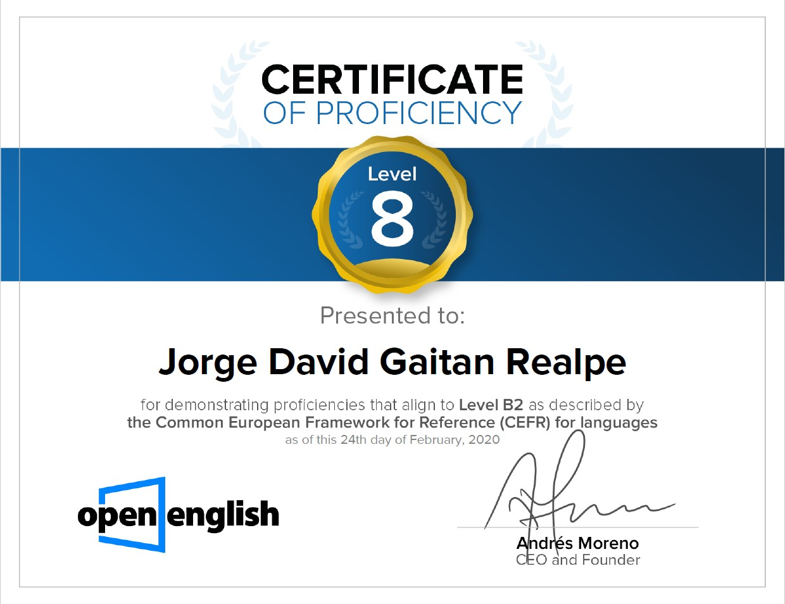
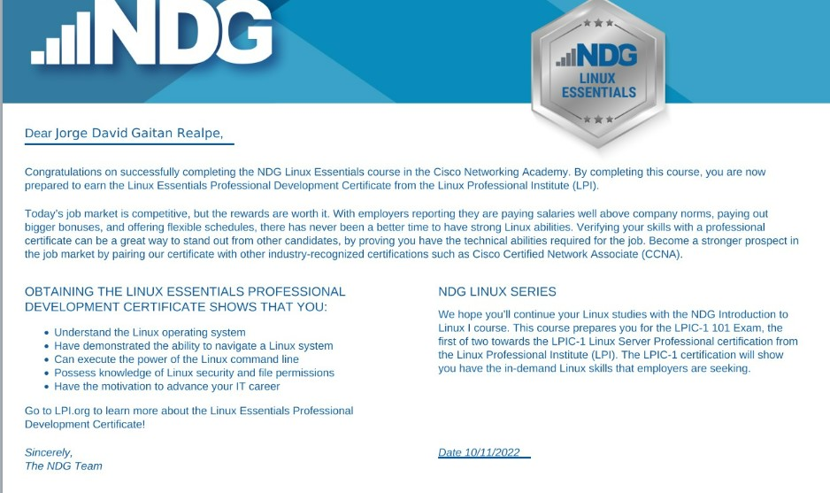

Jorge David Gaitán Realpe
Soy un estudiante de noveno semestre de Ingeniería en Sistemas y Computación, apasionado por el desarrollo tecnológico y la innovación. Me destaco por mi proactividad, dedicación y habilidad para alcanzar objetivos, así como por mi capacidad para colaborar eficazmente en equipos multidisciplinarios. Tengo habilidades sólidas en liderazgo y gestión de proyectos, demostradas a través de mi capacidad para trabajar eficazmente en equipo, distribuir tareas y coordinar actividades de manera efectiva. Además, soy un aprendiz ávido y estoy constantemente abierto a nuevas oportunidades para expandir y mejorar mis habilidades técnicas y profesionales.
Además, estoy enfocado en seguir explorando áreas específicas dentro del campo de la ingeniería en sistemas, como la inteligencia artificial o la ciberseguridad, con el objetivo de contribuir de manera significativa al avance y la innovación en estas áreas.
Mi trayectoria incluye el desarrollo de aplicaciones para plataformas Android, así como un dominio destacado de lenguajes de programación como C++, JavaScript, Python, HTML y CSS. Actualmente, mi enfoque principal se centra en el desarrollo de aplicaciones web, aunque estoy constantemente abierto a la oportunidad de aprender y expandir mis habilidades. Mi experiencia se extiende al ámbito del desarrollo web, donde he alcanzado un nivel intermedio en la creación dinámica y funcional de páginas web.
Además, cuento con experiencia en el manejo de bases de datos utilizando SQL, lo que garantiza la integridad y eficiencia en la manipulación de datos. Mi compromiso con la excelencia y el aprendizaje continuo me impulsa a buscar constantemente nuevas oportunidades para crecer y contribuir al campo del desarrollo tecnológico con soluciones innovadoras y de calidad.
Colegio San lucas (2008-2013) Ver en Mapas
Colegio Parroquial C.D.C (2014-2019) Ver en Mapas
Universidad Catolica de Colombia (2020-actualidad) Ver en Mapas
Como boat instructor en Arizona, mi función principal era asegurarme de que nuestros clientes estuvieran bien informados y seguros mientras navegaban. Me encargaba de explicar detalladamente las medidas de seguridad y proporcionar instrucciones claras sobre cómo manejar diferentes tipos de botes. Además, les ofrecía recomendaciones sobre rutas y destinos para que disfrutaran al máximo de su experiencia en el agua.
Trabajar como lifeguard en Cedar Point, Ohio, me permitió estar siempre atento y listo para actuar en caso de emergencia en las áreas acuáticas del parque. Mi responsabilidad principal era garantizar la seguridad de los visitantes, por lo que mantenía una vigilancia constante en las piscinas y atracciones acuáticas. Estaba preparado para intervenir rápidamente en situaciones de riesgo, proporcionar primeros auxilios y administrar RCP según fuera necesario.
Cuento con certificado B2 expedido por la compañia Open English en 2020.
Cuento con el certificado Linux Essential que desempeña el manejo del sistema operativo Linux.
Actualmente me encuentro desempeñando el curso como web development Bootcamp en udemy.